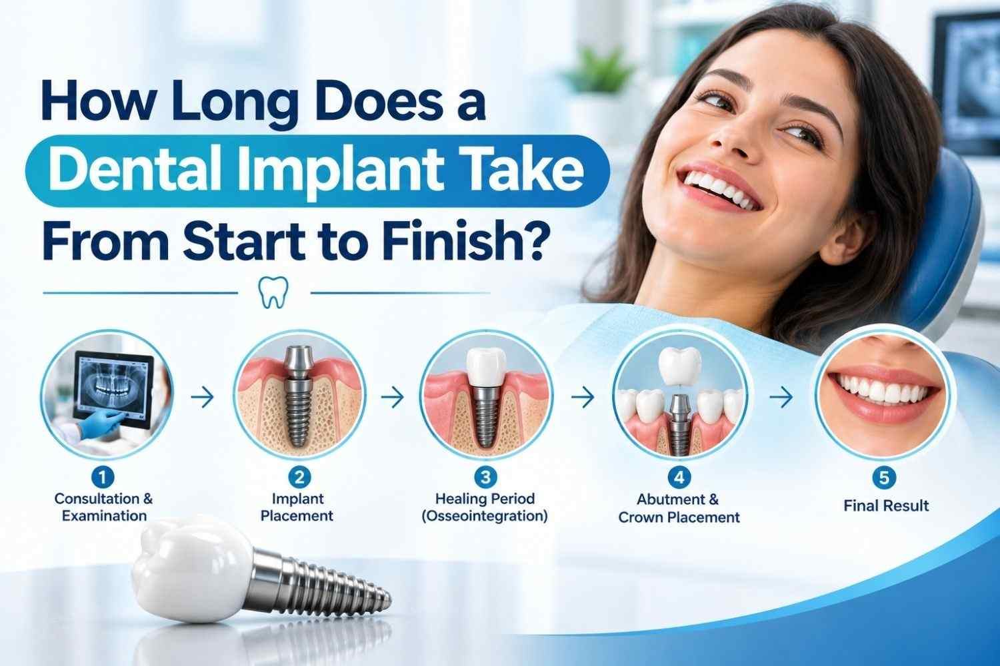

How Long Does a Dental Implant Take From Start to Finish?
If you are considering a dental implant, one of the first questions you will probably ask is: how long does a dental implant take? The honest answer is that there is no single timeline for everyone. A straightforward case may move through treatment in a few months, while tooth extraction, bone grafting, or other additional procedures can extend the process. For patients exploring Guided Dental Implant Surgery in Delhi, proper planning is an important part of understanding the expected timeline.
At Dental Care 'N' Cure, dental implant treatment involves assessing the mouth, planning implant placement, allowing the implant to heal, and then completing the final restoration. The clinic is headed by Dr. Mansi Arora Punia, identified by the practice as a prosthodontist and implantologist with more than 12 years of clinical experience.
The good news? The implant surgery itself is not what makes the process take months. Healing and osseointegration are the real timekeepers.

How Long Do Dental Implants Take?
A dental implant treatment timeline commonly spans several months. Cleveland Clinic states that the jawbone can take approximately three to nine months to fuse with the implant during osseointegration. Cambridge University Hospitals gives a typical healing period of around three to six months, although it can take longer, particularly when bone grafting is involved.
Dental Care 'N' Cure's own implant information states that implants generally require three to six months to fuse with the bone before the final tooth restoration can be attached.
So, when someone asks, How long do dental implants take?, think months rather than days. The exact dental implant timeline depends on your jawbone, gums, existing teeth, treatment plan, and whether you need additional procedures.
Also Read: Root Canal vs Tooth Extraction: Which Is Better for a Damaged Tooth?
What Are the Stages of a Dental Implant?
Understanding the stages of dental implant treatment makes the timeline much easier to follow. Although dentists may combine certain steps in suitable cases, the process generally includes assessment, implant placement, healing, and restoration.
1. Consultation and Treatment Planning
The first stage is the consultation. Your dentist evaluates your missing tooth, gum tissue, remaining teeth, and jawbone before deciding whether an implant is appropriate.
Dental imaging may also be required to understand the available bone and the surrounding anatomy. The treatment plan then determines where the implant fixture should go and how the final replacement tooth will be restored.
This planning stage matters because a dental implant is not simply a screw placed into the jaw and forgotten about. The implant, abutment, and dental crown need to work together as one restoration.
For patients considering guided dental implant surgery , guided planning can be part of the process when appropriate. The Dental Care 'N' Cure implant page explains that implant placement can involve precision channels created in the jawbone, often using a surgical guide.
2. Tooth Extraction, If Needed
If the damaged or non-restorable tooth is still present, tooth extraction may happen before implant placement.
The timing varies. In some situations, an implant may be placed at the same time as extraction. In others, the area needs time to heal first.
Mayo Clinic explains that dental implant treatment may involve removing a damaged tooth, preparing the jawbone when necessary, placing the implant, allowing bone growth and healing, and eventually placing the abutment and artificial tooth.
This is why two people who both need one dental implant can have completely different treatment timelines.
3. Bone Grafting When Necessary
Not everyone needs a dental bone graft. However, if the jawbone does not provide enough support for the implant, bone grafting may be recommended.
A bone graft adds material to an area where additional bone is needed. The graft then needs time to heal and develop enough strength before implant placement in many cases.
Cleveland Clinic notes that a dental bone graft needs at least about three months to heal, while larger grafts can take considerably longer. Mayo Clinic also notes that bone grafting may require several months before enough new bone develops to support an implant.
A sinus lift or guided bone regeneration may also be considered in selected cases, particularly when the available bone requires augmentation. Whether either procedure is necessary can only be determined after a clinical assessment.
How Long Does Implant Healing Take?
After dental implant placement, the most important part of the healing process is osseointegration.
Osseointegration means the jawbone forms a stable connection with the implant surface. This gives the artificial tooth root the foundation it needs before the final restoration is attached.
Cleveland Clinic reports a healing period of approximately three to nine months, while NHS hospital guidance commonly describes three to six months for implant healing.
Dental Care 'N' Cure similarly states that implants generally need three to six months to fuse with the bone.
The first phase of recovery is much shorter than this. Cleveland Clinic says the initial healing period after implant surgery takes about one week, but the bone continues healing around the implant for several months.
In other words, you may feel much better within days while your implant is still quietly doing its most important job underneath the gum.
What Happens After the Implant Heals?
Once the implant has sufficiently integrated with the jawbone, the restorative stage begins.
An implant abutment connects the implant to the visible replacement tooth. For a single missing tooth, the final restoration is often a dental crown. For multiple missing teeth, implants can support bridges or dentures.
Dental Care 'N' Cure describes single-tooth replacement as involving an abutment and custom-made crown after the appropriate healing period. Its implant information also describes fixed multiple-tooth replacement and implant-supported removable tooth replacement.
The restorative process can include taking impressions or digital records, designing the replacement tooth, having the dental laboratory fabricate the restoration, and checking its fit before final placement.
This is the final part of the dental implant process, but it should not be rushed. The crown needs to fit properly and work with your bite and surrounding teeth.
What Can Make a Dental Implant Take Longer?
Several factors can affect the dental implant treatment timeline.
Bone condition
Insufficient or soft jawbone may require bone grafting, which can add months to treatment.
Gum health
Healthy gum and periodontal tissues support good treatment planning. Active gum disease may need attention before or alongside implant treatment.
Smoking and certain health conditions
We note that factors such as smoking, uncontrolled diabetes, uncontrolled periodontal
disease, and certain medical conditions can affect whether an implant successfully fuses
with bone.
Mayo Clinic also identifies factors that can affect candidacy and bone
healing, including certain health conditions and tobacco use.
Number of implants
Replacing one tooth is generally a different process from replacing several teeth or supporting an implant-supported denture. More extensive treatment can require additional planning and restorative steps.
Individual healing
Bodies do not follow identical calendars. Your dentist will monitor healing rather than simply assuming that a particular number of weeks guarantees readiness for the final restoration.
Can a Dental Implant Be Done in One Day?
You may have seen terms such as same-day dental implants or immediate dental implants . These terms can be confusing.
In selected situations, an implant can be placed immediately after tooth extraction, and some treatment plans can include a temporary tooth during healing. However, that does not mean every patient receives a complete permanent implant and crown in one day.
Mayo Clinic explains that some steps can sometimes be combined depending on the individual case, while Cleveland Clinic describes dental implant treatment as a process involving multiple visits and healing.
What Does Recovery After Dental Implant Surgery Feel Like?
Dental implant surgery involves a healing period, and your dentist will give you specific aftercare instructions.
The early recovery period can include swelling, tenderness, or discomfort around the surgical area. Cleveland Clinic describes the initial healing phase as roughly one week, while the deeper bone-healing process continues for months.
Following your dentist's instructions for oral hygiene and follow-up appointments is important. Dental Care 'N' Cure also recommends regular dental monitoring and daily oral hygiene, including brushing and flossing, to help maintain implant and surrounding tissue health.
Is Dental Implant Treatment Worth the Waiting Time?
The answer depends on your individual dental condition, treatment goals, and alternatives. An implant is designed to replace the root portion of a missing tooth and can support a crown, bridge, or denture.
The longer timeline mainly comes from biology. Your jawbone needs time to integrate with the implant before the final restoration is placed. Rushing that process would defeat the purpose.
If you are looking for the Best dental clinic in Delhi , focus less on a catchy label and more on whether the clinic provides appropriate assessment, clear treatment planning, qualified dental professionals, suitable imaging, and proper follow-up.
For patients specifically considering Dental Implant treatment in Paschim Vihar, Dental Care 'N' Cure provides dental implant services at its clinic in Shubham Enclave, Paschim Vihar, New Delhi. The practice lists Dr. Mansi Arora Punia as its prosthodontist and implantologist and states that it has a multidisciplinary team of dental professionals.
You can explore the clinic's dental implant treatment information when researching your options.
Final Answer: How Long Does a Dental Implant Take?
So, how long does a dental implant take from start to finish?
For many patients, the overall treatment takes several months, with the implant itself commonly needing around three to six months to integrate with the jawbone. Some patients may need three to nine months of healing, and additional procedures such as bone grafting can make the overall timeline longer.
The key stages are:
- Consultation and treatment planning
- Tooth extraction, if required
- Bone grafting or other preparation, if required
- Dental implant placement
- Osseointegration and healing
- Abutment placement
- Dental crown or other final restoration
- Follow-up and maintenance
At Dental Care 'N' Cure, the focus is on assessing the individual case and planning the implant and restoration rather than treating every patient according to one fixed schedule. That approach makes sense because dental implants involve both surgery and biology, and unfortunately, neither one takes instructions from a stopwatch.
Call us to book a consultation and find out what your dental implant timeline could look like.